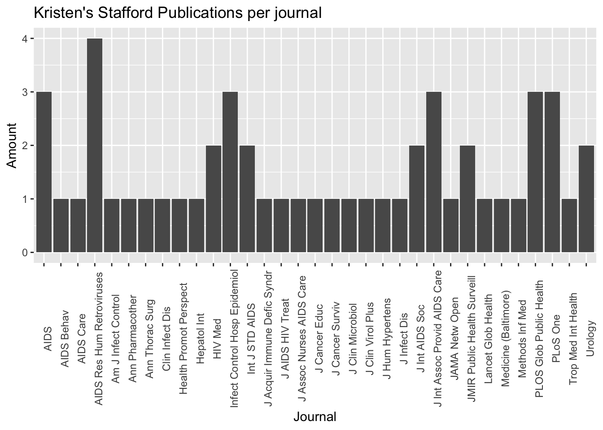
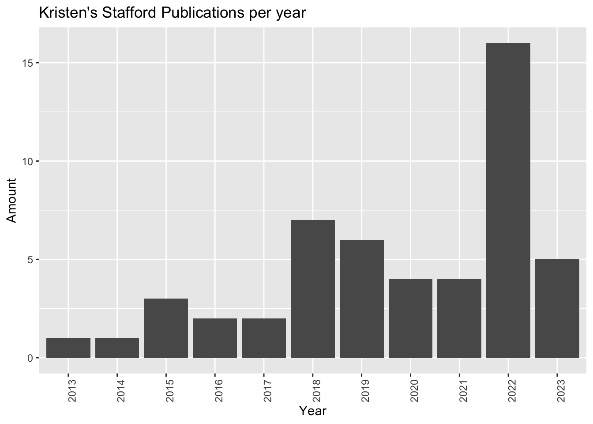

#install.packages('rentrez')
library(rentrez)Accessing NCBI data with the Rentrez package
R Community of Practice June 15 - July 20
Learning Goals:
Our goals for today are:
- Become familiar Rentrez.
- Learn basic search functions.
- Extract information from the esumaries.
Challenges of Working with Data an Unknown Source
- The data may not arranged in a standardized format (BIBFRAME, MARC, METS, MODS, EAD…)
- The source documentation may be incomplete, or may not answer our questions.
- Not knowing what extra steps we may need to take to clean the data, so it can be usable.
The Data
Scenario: Today our data comes from PubMed, a National Center for Biotechnology Information (NCBI) database. Our data outputs, will contain bibliographic information about our search query. We want to accomplish the following tasks:
- Download
Rentrez. - Perform simple and boolean searches.
- Create a graph using your search results.
What is Rentrez?
Rentrez is an R interface that allows its users to interact with NCBI API.
With Rentrez, you do not need to use any additional program or terminal to access NCBI Data.
This means that you can request data from multiple databases (PubMed, SNP, Clinvar, SRA, Gene, and others) in the same RStudio Session.
Install and Load Rentrez
Now, remember that you need to install any new package that you want to use in RStudio. Also, once you have the package you need to load it.
Rentrez Functions
The functions listed below help you learn a little bit more about Rentrez and NCBI Databases.
| Function | Usage |
|---|---|
| entrez_dbs() | List of Entrez Databases |
| entrez_db_summary() | Brief description of what the database is |
| entrez_db_searchable() | Set of search fields that can used with this database |
Performing searches with Rentrez
The functions listed below help you perform searches to a NCBI Database.
| Function | Usage |
|---|---|
| entrez_search() | Allows you to perform simple or boolean searches |
| entrez_summary() | Allows you to retrieve basic information about the records found |
| extract_from_esummary() | Extract elements from a list of esummary records |
entrez_search()
Similar to PubMed, Rentrez allows you to perform simple or boolean searches using the same structure that you would use in the PubMed search bar. The allowed boolean terms are AND, OR, and NOT.
First, let’s learn the syntax for a simple and a boolean search:
Simple Search:
pcos_pm <- entrez_search(db="pubmed", term = "pcos[all]")Boolean search:
pcos_ir_pm <- entrez_search(db="pubmed", term= "pcos[all] AND insulin resistance[all]")entrez_summary()
Now let’s retrieve basic information about the records we collected in one of our searches. But, first, let’s learn the syntax of the entrez_summary() function.
summary_pcos_pm <- entrez_summary(db="pubmed", id=pcos_pm$ids)extract_from_esummary()
This function helps you navigate through an XMLInternalDocument and extract elements from a list of esummary records. But, first, let’s learn the syntax of the extract_from_esummary() function.
uids <- extract_from_esummary(summary_pcos_pm,"uid")
authors <- extract_from_esummary(summary_pcos_pm,"authors")["name",]
pubdate <- extract_from_esummary(summary_pcos_pm,"pubdate")Exercise: Let’s practice!
Now lets perform our own searches!
We are going to use the Rentrez functions to extract data from an NCBI database.
Our objective is to:
Build your query: Identify your search terms, adequate database, search fields and perform the search using rentrez.
Get article/object summaries.
Select the values that you would like to save (for example author, title, source).
Create a graph that represents the results of your search.
STEP #1
Build your query: Identify your search terms, adequate database, and search fields and perform the search using Rentrez.
# Im interested in seeing Dr. Kristen Stafford Publications, Associate Professor of Epidemiology and Deputy Director - Center for International Health, Education, and Biosecurity
search <- entrez_search(db="pubmed", term = "Kristen A. Stafford[AUTH]",retmax=100)
searchEntrez search result with 51 hits (object contains 51 IDs and no web_history object)
Search term (as translated): stafford, kristen a[Author] STEP #2
Get article summaries
summary <- entrez_summary(db="pubmed", id=search$ids)
summaryList of 51 esummary records. First record:
$`37247622`
esummary result with 42 items:
[1] uid pubdate epubdate source
[5] authors lastauthor title sorttitle
[9] volume issue pages lang
[13] nlmuniqueid issn essn pubtype
[17] recordstatus pubstatus articleids history
[21] references attributes pmcrefcount fulljournalname
[25] elocationid doctype srccontriblist booktitle
[29] medium edition publisherlocation publishername
[33] srcdate reportnumber availablefromurl locationlabel
[37] doccontriblist docdate bookname chapter
[41] sortpubdate sortfirstauthor STEP #3
Select the values that you would like to save (for example author, title, source)
# I want to know how many publications she has and in what journal she publishes the most.
library(tidyverse)
pubdate <- extract_from_esummary(summary,"pubdate") %>%
substr(start= 1, stop=4)
source <- extract_from_esummary(summary,"source")STEP #4
Create a graph that represents the results of your search.
ggplot(mapping = aes(x=source)) +
geom_bar() +
theme(axis.text.x = element_text(angle = 90)) + # To rotate journals names
labs(title = "Kristen's Stafford Publications per journal", # Set up graph title and labels
x="Journal", y= "Amount")
ggplot(mapping = aes(x=pubdate)) +
geom_bar() +
theme(axis.text.x = element_text(angle = 90)) +
labs(title = "Kristen's Stafford Publications per year", # Set up graph title and labels
x="Year", y= "Amount")